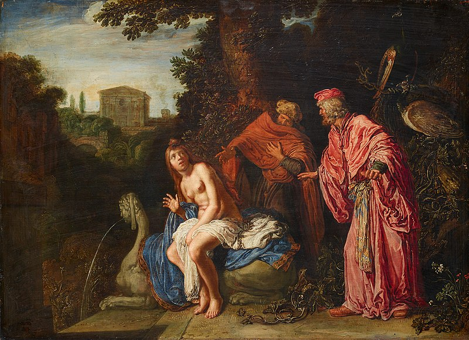
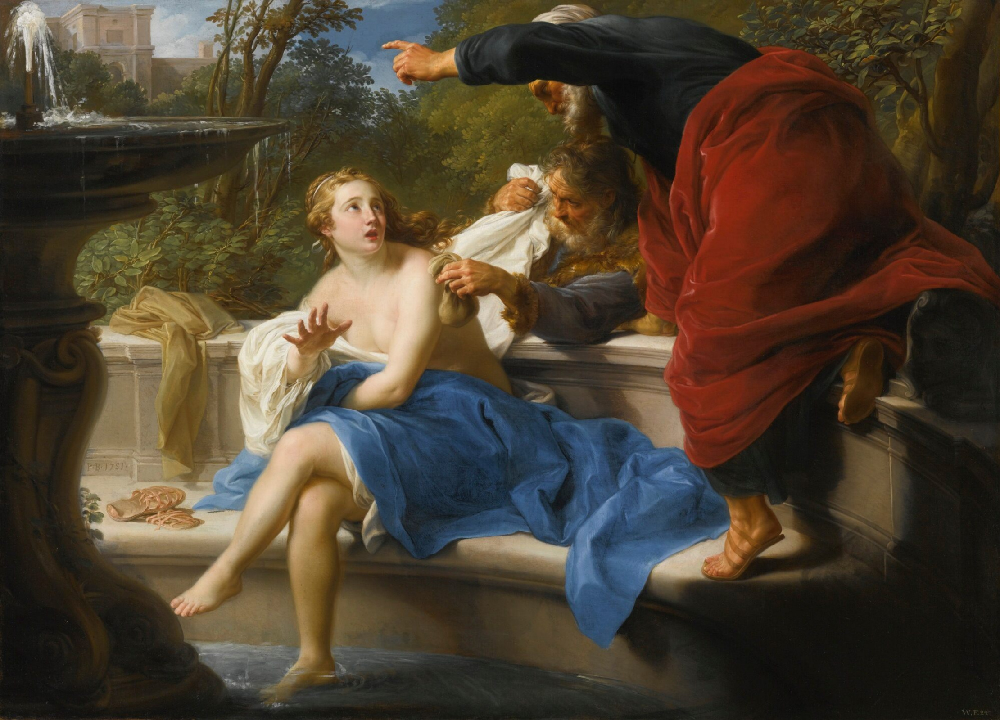

“Susanna and the elders” is a painting series by Artemisia Gentileschi. Done in 1610, it is one of her earliest known works, with her recreating the scene a number of times throughout her career. Gentileschi was the first women painter to be inducted into the Accademia di Arte Del Disegno. Many Italian critics consider her as the only woman in Italy who understood the fundamentals of coloring, drawing, and painting. Every painting Gentileschi has done (49) works. Each one features a female protagonist, or the main subject matter being the female in the painting. Every. Single. One.

You won’t hear about her often when talking about influential renaissance artists. A lot of her life has been overshadowed by her rape trial. In 1611, barely a year after susanna, Agostino Tassi raped her while she was at her home. A female friend of Artemisia was present, but refused to help her. Agostino was convicted seven months later, but on the charges of violating the Gentileschi’s family honor, not for hurting Artemisia. Artemisia was tortured by thumbscrews (a roman device that peels off fingernails) in order to verify her testimony. Agostino’s punishment was exile from Rome, but it was never carried out.

I wonder, how many lost paintings are there? How many women have painted in their attics, hiding from the gaze of the patriarchy. How many fingernails trail behind skirts, while their onlookers watch from palaces. In the eyes of a man, when I scream to the world 49 times how i am not just a hole, will he listen when I am brushing my hair at night? Am I just lipsticks and nail polish? Can I never be an angry woman? If I sleep next to paintbrushes every night, would it matter if my competition is a guy who learned how to draw yesterday? Artemisia, we may be from different generations, different times, and your skeleton is long gone. But I see your spirit in every tear I have cried over fathers telling me to forget reading, that literature was meant to be choked from an adam’s apple. In this little corner of the web, I promise I cherish your work for the way the oil drips from the canvas. I think nothing of the way you tie your hair or color your lips. I only look at the painted skies. I dream of the day I can leap into your paintings and comb my leg hair with my fingers.